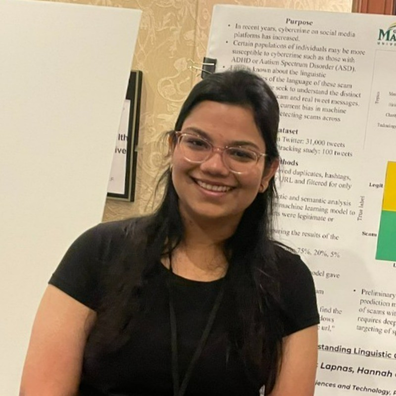

Ph.D. Student · George Mason University
I am a fourth year Ph.D. student in College of Engineering and Computing at George Mason University, advised by Dr. Hemant Purohit in the Humanitarian Informatics Lab. My research sits at the intersection of human-centred artifical intelligence and multimodal large language models, with a focus on creating acessible solutions during high-stake situations such as risk communication.
I received my B.S. in Computer Science from George Mason University in 2021. As an undergraduate researcher, my research interests involved understanding varied user intentions on practicing vaping at a large scale which can then inform policy makers and public health agencies in providing timely information towards intervention designs, including education campaigns and policymaking to curb e-cigarette usage.
